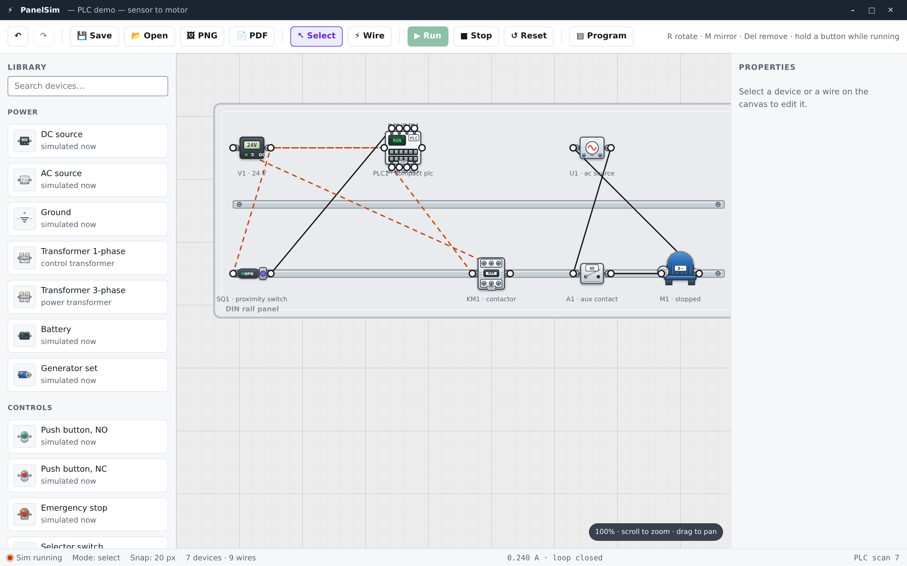

Wire real industrial devices terminal to terminal, program the ladder, run VFDs and sensors — offline on Windows. No tiers, no account, no license checks.

Free tiers usually stop you at a handful of devices, the useful half sits behind a Pro plan, and the app wants to check its license online — right when the classroom Wi-Fi drops. PanelSim removes all three: the whole library, offline, with nothing to activate.
All 63 device types — contactors, PLCs, drives, sensors, meters — included from the first launch.
There is no server. The app never phones home, never deactivates, never expires.
Open it and build. Projects save as plain .psim files you own.
Three steps from empty canvas to a running motor.
Drag pictorial devices from the library and connect them terminal to terminal, like the real panel.
Open the ladder editor, write start/stop and seal-in logic, press ▶ Run — the PLC scans live every 150 ms.
Read volts and amps with the instruments, watch the overload trip, export the panel as PNG or PDF.
Not just a drawing tool — the circuit behaves.
One plan. Nothing to unlock.
Yes — completely. There is no backend, no account system and no license server. The only time your PC needs the network is to download the installer.
Windows 10 or 11, 64-bit. The installer and a portable zip are both on the releases page.
No. Install, press File → it just runs. Projects are plain files you can back up or share.
No telemetry, no analytics, no cookies — the app and this page collect nothing.
Yes for teaching and learning. It is a training simulator: always have real installations checked by a qualified professional against applicable standards.
Yes — github.com/243275-ctrl/panel-sim. Issues and feature requests welcome.
Download, open the PLC demo, press Run — sensor to motor, live.
Download PanelSim for Windows